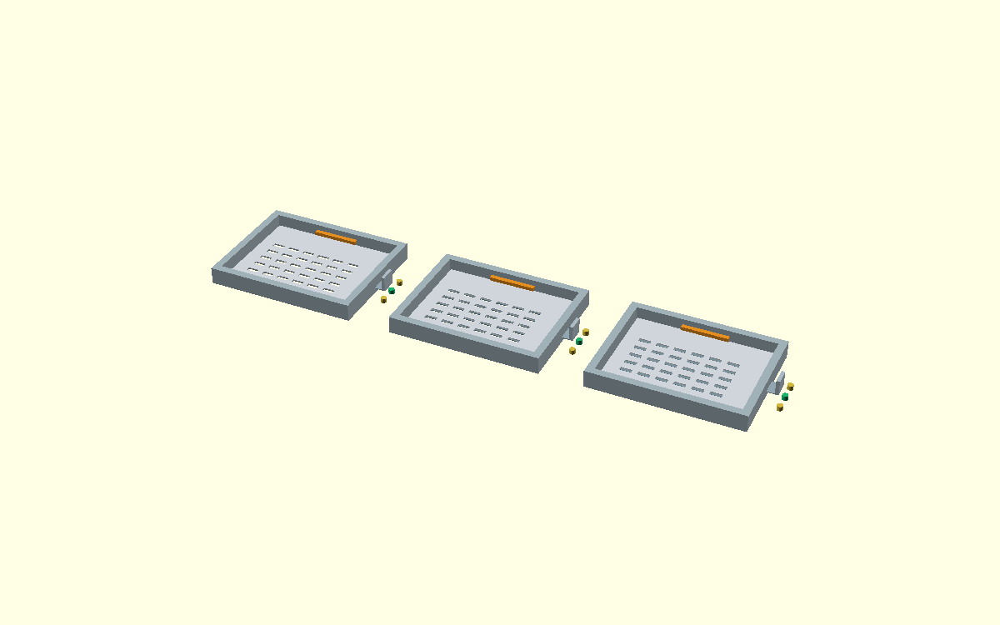

A changeable aperture, without losing the insect or its evidence.
A single modular sieve cassette with three mechanically indexed nominal apertures. Each proposed configuration has a traceable source, material, sample-handling gate and experiment design. The interface does not command robots or infer that physical specimens survived.
Indexed overlap-sieve cassette

To change the effective aperture, the overlapping slotted plates must be EMPTY, fluid must be OFF, both screens must be inspected, and the positive latch must be re-engaged. Current CAD does not prove a liquid seal or that appendages cannot lodge between plates. No live adjustment of loaded specimens is authorized.
Before an aperture transition
The fixed stainless carrier remains the preferred physical fallback; this variable cassette is a geometrically parameterized proof of concept.
Compare candidate instruments and processing options
Selections below are a planning workspace only. Changing them generates NO operating command and no simulated or measured scientific score.
A detector confidence score, a hash, or an expert ticket alone cannot confirm a novel insect species. Taxonomic novelty is a candidate claim until a qualified reviewer checks reference specimens, morphology and relevant molecular evidence.
Factor-isolated comparisons
Planned contrasts between baseline and one substituted module; not laboratory trials.
Research and publication readiness
Birnboim–Doly (1979) describes bacterial plasmid alkaline lysis, not a validated nondestructive insect whole-genome or RNA workflow. Reagents and thermal steps remain post-voucher research branches.
Current receipt state
On magicPRObox the local server independently checks ordered event prefixes and frozen file hashes, and streams updated status every ~1 second. Static hosting cannot reach the local process automatically. Neither link proves a signed or physically verified chain.